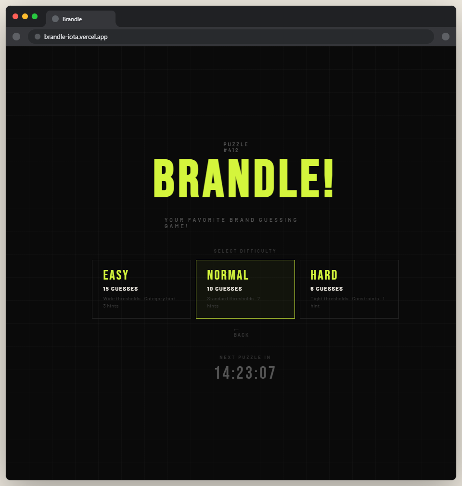
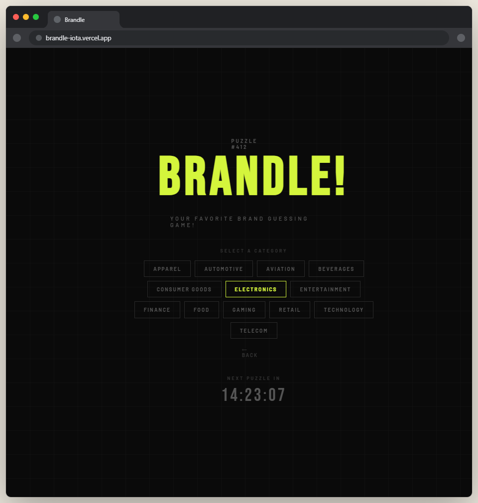
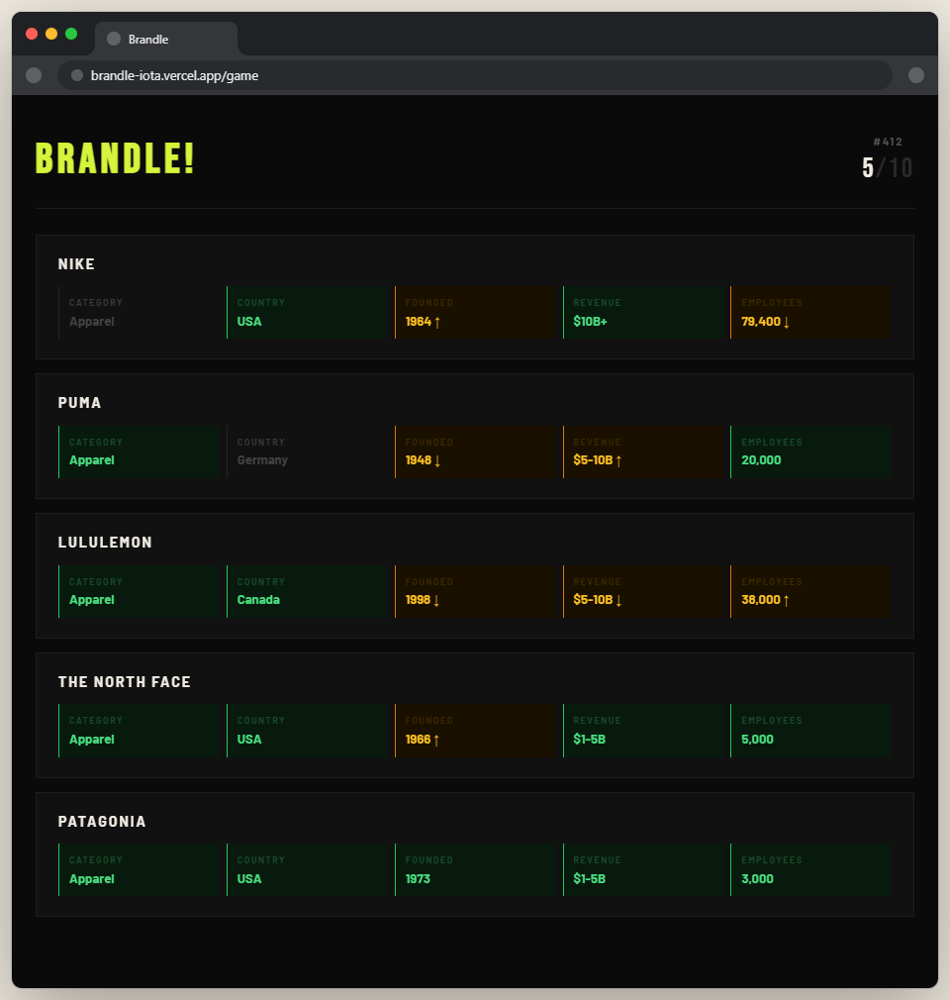
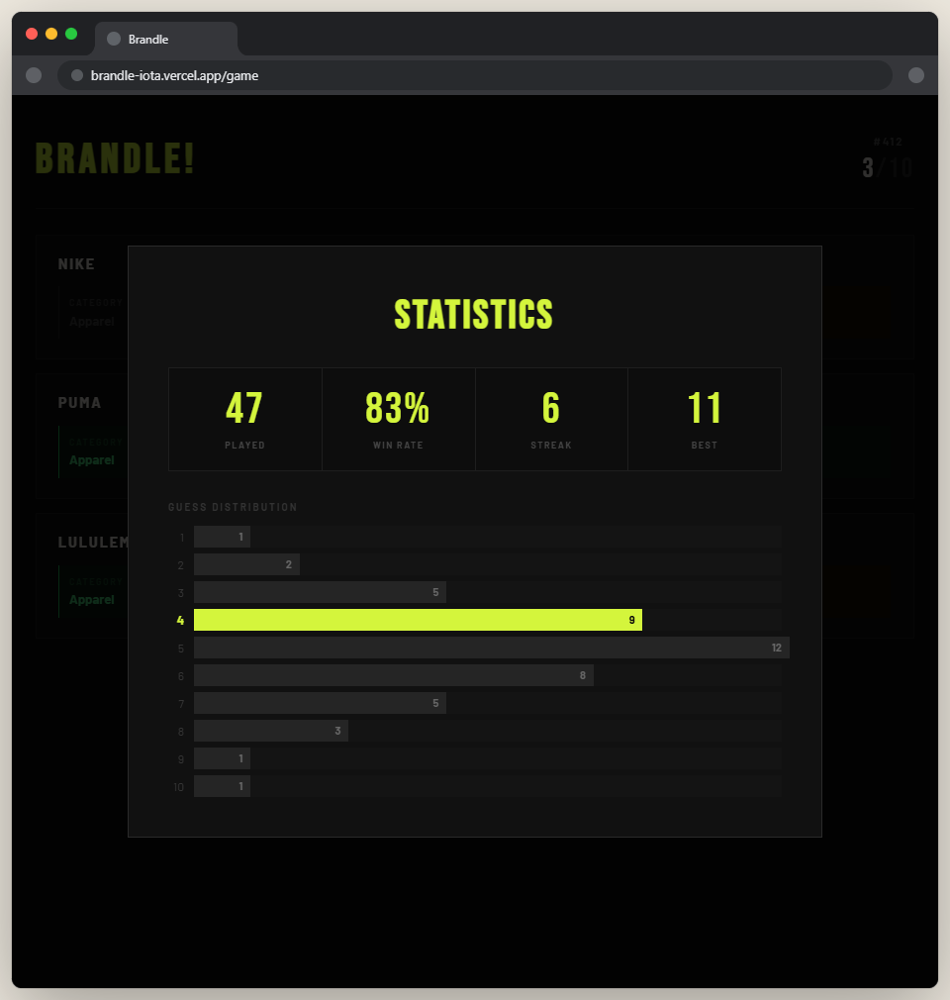
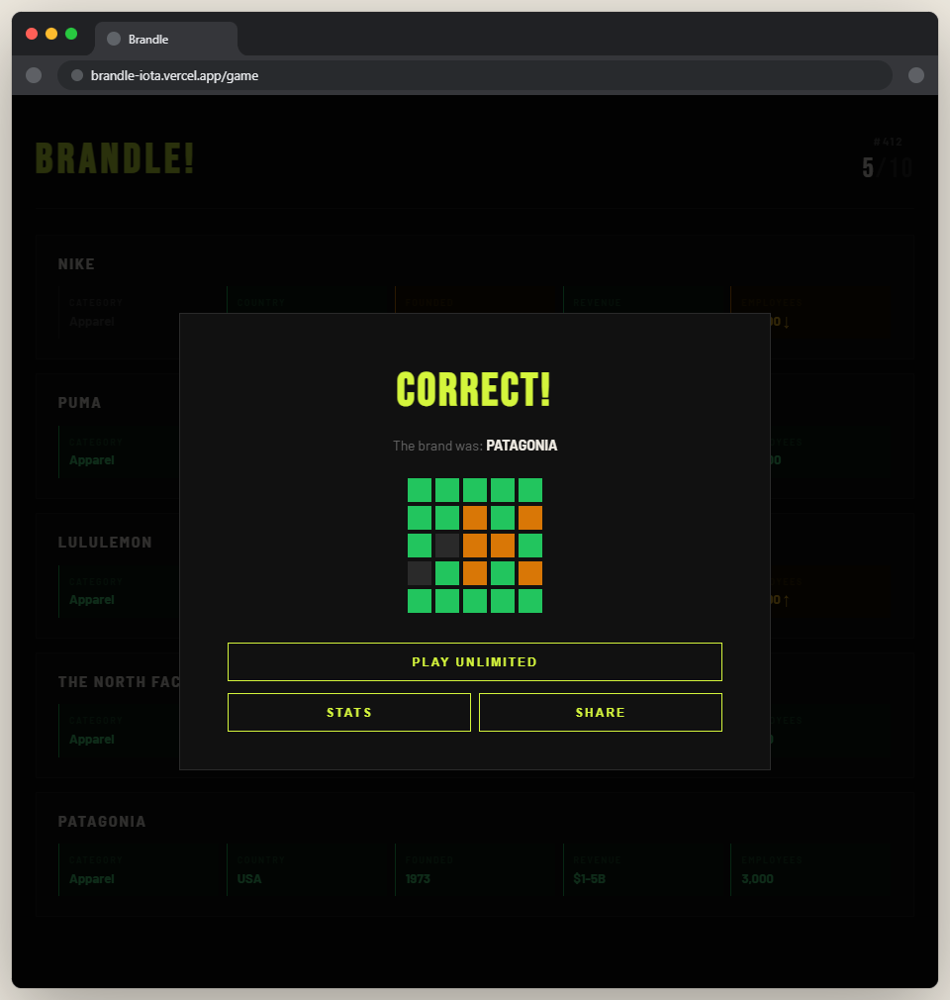

Overview
Brandle is a daily brand-guessing game built on a hand-curated dataset of 200+ companies. Turns out the real design challenge wasn't the Wordle mechanic, it was the data. Inconsistent founding years, lagged revenue figures, subsidiary ambiguity: all of that decides whether the game feels fair or just random. You guess the mystery brand across five attributes (category, country, founding year, revenue, employees) and get color-coded feedback on how close you are.
Inside Brandle
Setting up

Start screen
Pick daily or unlimited, and a difficulty.

Category select
Focus unlimited play on one industry.
Playing

Game board
Five attributes, color-coded feedback.

Stats & streaks
Win rate, streak, and guess distribution.

Share grid
Spoiler-free results, ready to post.
The problem
Brandle started as a class project: build something with a Supabase backend. I threw together a Wordle clone in a weekend and submitted it. But halfway through, I realized the interesting version wasn't about words at all, it was about brands. Everyone has some fuzzy mental model of a company (where it's from, how big it is, what it actually does) and those models basically never get tested. The guessing mechanic felt like a perfect way to surface that.
The real question was whether it had legs outside the classroom. A daily guessing game about brand attributes isn't an obvious hit. But Wordle already proved the format works, and brands have something words don't: people actually have opinions about them.
Highlights
- 01
Feedback across five attributes at once: green for exact, yellow for close, arrows showing higher or lower on the numeric ones. Five signals without it feeling like a mess.
- 02
Daily mode uses a deterministic seed so everyone gets the same brand each day. Unlimited mode picks randomly if you want to keep playing. Both share stats, streaks, and a shareable result grid.
- 03
Difficulty modes change your guess limit and how tight the numeric tolerance is. The same brand can feel easy or brutal depending on how narrow those windows are.
- 04
Local stats and streaks: win rate, guess distribution, current and best streak. The Supabase data model is already set up for leaderboards once I add auth.
- 05
Hard mode forces you to actually use the info you've already revealed in your next guess. It genuinely changes how you think through what's left.
Under the hood
Daily mode uses a deterministic seed derived from the date, so it's the same brand for every player on the same day. That means consistent results without storing a "today's puzzle" record anywhere or managing server-side state for puzzle selection. Unlimited mode just picks randomly, excluding the last 30 days of daily brands so you don't see repeats.
The feedback algorithm checks all five attributes at once. Category and country are binary, you're either right or you're not. The three numeric fields (founding year, revenue, employee count) get graduated proximity feedback with directional arrows. Tolerance thresholds change per difficulty mode, which is what actually makes hard mode hard: the windows get tighter, so a guess that would've scored yellow on normal mode just scores gray.
"For a content-driven game, curation basically is the design work. Getting 200 brands with consistent, verifiable data across five attributes took longer than building the actual game."
Reflection
The most interesting design problem in Brandle wasn't the game mechanic, it was the dataset. Inconsistent founding year data (acquisition date vs. original founding), revenue figures that lag by a year, subsidiary vs. parent company ambiguity: data quality directly decided game quality. I genuinely spent more time normalizing data than writing React components.
The stats model was built with future features in mind. Local state handles your current and best streak, and a Supabase table gets populated on every completed game with a structure that's ready for a global leaderboard once auth is wired up. Building the data model before the feature existed was the right call. Retrofitting persistence later is miserable.
Tech stack